例题 1
例 1 证明: 长方体 的平面 平行于平面 .
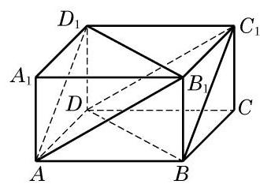
图 10-4-4
学生阅读版 / 沪教版高中数学
必修第三册
第10章空间直线与平面 · 保留教材主线与原题
教材与正式教参整合
两个平面的位置关系只有两种情况:平行或相交. 在本节中, 我们将讨论如何判断平面间的平行与垂直关系, 以及如何更精确地刻画两个相交平面间的位置关系.
我们希望通过直线间或线面间的平行关系来判断平面间的平行关系. 为此, 先思考下面的问题:
(1)如果平面 平行于平面 ,那么这两个平面上的一切直线都相互平行吗?
(2)如果平面 上有一条直线与平面 平行,那么能保证这两个平面平行吗?
(3)如果平面 上有两条相交直线与平面 平行，那么能保证这两个平面平行吗?
问题(1)的回答是否定的. 事实上，长方体的上、下两个底面平行,但这两个底面上的直线间有不同的位置关系,如 平行于 ,而 与 异面且垂直,如图 10-4-1 所示.
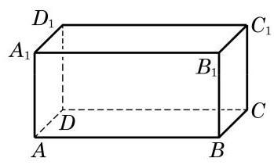
图 10-4-1
问题(2)的回答也是否定的. 例如，当三角板的一条边所在的直线与桌面所在的平面平行时, 不能保证三角板所在平面与桌面所在平面保持平行, 因为这个三角板还可以绕这条边转动.
至于问题(3)，其答案应是肯定的，因为两条相交的直线完全确定了这个平面. 我们可以用反证法来严格地加以证明: 如图 10-4-2,假设 不平行于 ,那么 与 相交于直线 . 由直线与平面平行的性质定理知,直线 及 均平行于 ,从而 . 这与已知 是相交直线矛盾. 故假设不成立,即 .
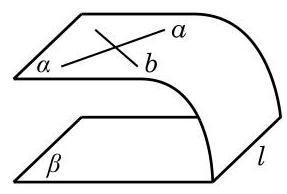
图 10-4-2
由此, 我们就得到了下面的定理.
两个平面平行的判定定理 如果一个平面上的两条相交直线与另一个平面平行, 那么这两个平面平行.
上述定理可以帮助我们方便地判断两个平面是否平行. 例如, 在测量时, 为判断一个平面与水平面是否平行, 可将水平仪 (图 10-4-3)置放在这个平面上, 并变换方向测试两次, 如果水平仪的水泡两次都居中, 就可以断定这个平面和水平面是平行的.
图 10-4-3
例 1 证明: 长方体 的平面 平行于平面 .

图 10-4-4
例 2 若一条直线 垂直于两个平行平面 中的一个平面 ,则它必垂直于另一个平面 .
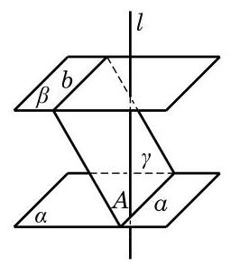
图 10-4-6
(1)若一个平面内的两条直线均平行于另一个平面，则这两个平面平行；
(2)若一个平面内两条不平行的直线都平行于另一个平面，则这两个平面平行；
(3)若两个平面平行，则其中一个平面中的任何直线都平行于另一个平面；
(4)平行于同一个平面的两个平面平行；
(5)若一个平面内的任何一条直线都平行于另一个平面, 则这两个平面平行.
(1)点 到直线 的距离；
(2)点 到平面 的距离；
(3) 到平面 的距离；
(4)平面 到平面 的距离.
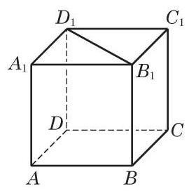
(第 2 题)
在开门时，有时开得大些，有时开得小些，这里的“大”或 “小”，可用门所在平面和门框所在平面之间的夹角来度量. 现在, 我们来定义两个平面之间的夹角.
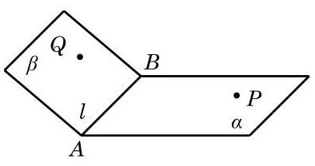
图 10-4-8
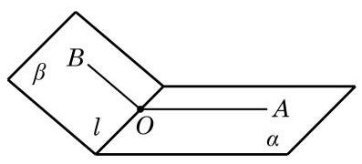
图 10-4-9
下面我们要讨论的问题是应该如何刻画一个二面角的大小.
如图 10-4-9,若在二面角 的棱 上任取一点 ,且过 分别在面 、 上作棱 的垂线 和 ,容易证明射线 和 构成的角 的大小与点 的取法无关. 因此,我们可以用 来表示二面角 的大小,并称其为二面角 的平面角. 二面角的取值范围是 . 当二面角 的大小等于直角时, 我们称这个二面角为直二面角.
当两个平面相交所成的二面角是直二面角时, 我们就说这两个平面互相垂直.
两个互相垂直的平面, 一般画成图 10-4-10 的样子: 将直立平面的竖边画成和水平平面的横边垂直. 平面 与平面 垂直， 记作 .
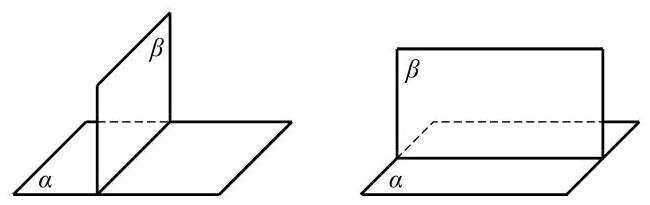
图 10-4-10
用下面的定理判定两个平面垂直比直接用定义要方便一些.
平面与平面垂直的判定定理 如果一个平面经过另一个平面的一条垂线,那么这两个平面垂直.
证明 设平面 过另一平面 的垂线 ,点 在平面 上, 则平面 与平面 交于过点 的直线 ，且 . 如图 10-4-11， 在平面 上过点 作 ，则 是二面角 的平面角. 由 与 ,推出 ,即 是直角,从而二面角 是直二面角,所以 .
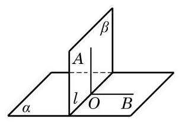
图 10-4-11
平面与平面垂直的性质定理 如果两个平面垂直, 那么其中一个平面上垂直于两平面交线的直线与另一个平面垂直.
证明 仍参看图 10-4-11,平面 平面 ,它们的交线是 . 直线 ,且 ,垂足是 . 过点 在平面 上作 , 则 是二面角 的平面角. 由于 是直角, 即 ,这个条件连同条件 立即推出 平面 .
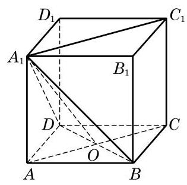
图 10-4-12
例 3 如图 10-4-12,已知正方体 .
(1)作出二面角 的平面角;
(2)求证:平面 平面 .
(1)平面 上的任意一条直线都垂直于平面 上的任意一条直线；
(2)平面 上的任意一条直线都垂直于平面 上的无数条直线；
(3)平面 上的任意一条直线都垂直于平面 ；
(4)过平面 上任意一点作平面 与 交线的垂线 ，则 .
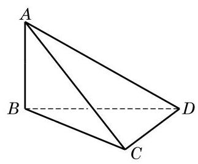
(第 2 题)
(1)平行于同一条直线的两个平面平行;
(2)若两个平面分别经过两条平行直线，则这两个平面平行；
(3)分别在两个平行平面上的两条直线平行；
(4)与两条异面直线都平行的两个平面平行.
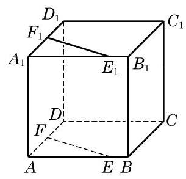
(第 2 题)
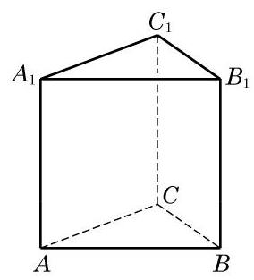
(第 3 题)
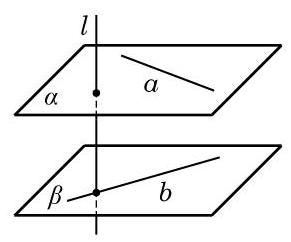
(第 4 题)
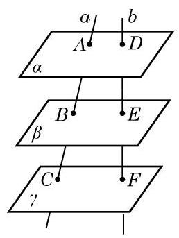
(第 5 题)
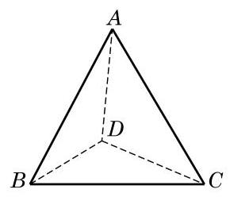
(第 8 题)
(1)若平面 平面 ，平面 平面 ，则平面 平面 ；
(2)若平面 平面 ，平面 平面 ，平面 平面 ，则平面 平面 .
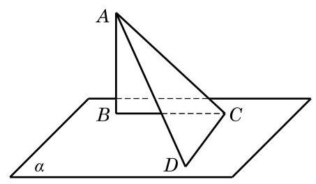
(第 10 题)
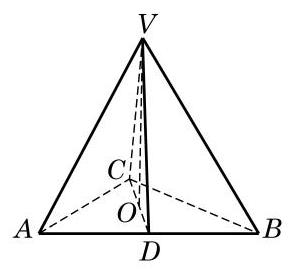
(第 2 题)